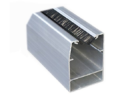

400-928-8383
快速软帘卷门是一种以PVC涂层织物配置水平增强构建为帘布，上下快速卷动的内门。它适用于车间、库房、及洁净 车间的内部隔断门，以快速启闭阻隔空气和温度的对流。
| 类型 | 普通PVC快卷门 | 机器保护门 | 食品加工快速门 | |
|---|---|---|---|---|
| 低配 | 高配 | |||
| 最大尺寸 | DW4500*DH4500 | DW4500*DH4500 | DW4500*DH4500 | DW4500*DH4500 |
| 最大尺寸 | DW4500*DH4500 | DW4500*DH4500 | DW4500*DH4500 | DW4500*DH4500 |
| 最大尺寸 | DW4500*DH4500 | DW4500*DH4500 | DW4500*DH4500 | DW4500*DH4500 |
| 最大尺寸 | DW4500*DH4500 | DW4500*DH4500 | DW4500*DH4500 | DW4500*DH4500 |
| 最大尺寸 | DW4500*DH4500 | DW4500*DH4500 | DW4500*DH4500 | DW4500*DH4500 |
| 最大尺寸 | DW4500*DH4500 | DW4500*DH4500 | DW4500*DH4500 | DW4500*DH4500 |
| 最大尺寸 | DW4500*DH4500 | DW4500*DH4500 | DW4500*DH4500 | DW4500*DH4500 |
| 最大尺寸 | DW4500*DH4500 | DW4500*DH4500 | DW4500*DH4500 | DW4500*DH4500 |
2.1 门帘颜色
2.2 门帘参数
| 序号 | 项目 | 指标 |
|---|---|---|
| 1 | 涂层种类 | PVC |
| 2 | 基部材料 | 超低收缩涤纶长丝 |
| 1 | 涂层种类 | PVC |
| 2 | 基部材料 | 超低收缩涤纶长丝 |
| 1 | 涂层种类 | PVC |
| 2 | 基部材料 | 超低收缩涤纶长丝 |
| 1 | 涂层种类 | PVC |
| 2 | 基部材料 | 超低收缩涤纶长丝 |
PVC快速卷帘门的轨道通常由铝合金材料制成，根据快速卷帘门的门帘大小，材料的厚度也不同，但是最少不低于2.5mm， 这样才能保证它有足够的支撑力，能够防止快速门的下沉或变形。

卷筒置于快卷门顶部包厢内，采用优质高精度无缝钢管加工，确保卷筒高速卷动时的平衡。
卷筒有114mm和165mm两种规格，根据门的尺寸配置。
PVC快卷门的电控系统主要由驱动电机和控制箱等组成。
驱动电机的旋转来驱动门的开启关闭。门在关闭时靠门的重量或驱动齿条来实现，此时驱动电机来控制门的关闭速度。控制
单元为门的运行提供速度调节和自动功能。
控制箱安装在门洞口侧部的墙壁上。控制箱上有开门、关门、停止按钮和急停按钮。控制箱上还安装有主电源开关，可以通过 旋转该开关来接通或断开供电电源。
电机规格参数
| 额定功率 | 750W、1500W |
| 额定转速 | 2000rpm |
| 额定功率 | 750W、1500W |
| 额定转速 | 2000rpm |
| 额定功率 | 750W、1500W |
| 额定转速 | 2000rpm |
| 额定功率 | 750W、1500W |
| 额定转速 | 2000rpm |
| 额定功率 | 750W、1500W |
| 额定转速 | 2000rpm |
| 额定功率 | 750W、1500W |
| 额定转速 | 2000rpm |
红外对射装置：在门框的两侧会相对地安装一组红外对射，发射一束红外线光束，在门帘向下运行时，红外线光束要是被障碍 物阻挡，安全保护系统就会发出命令，命令电机停止运行，并使门体自动向反方向运行，直至返回到开启状态。
安全气囊：安全气囊一般是安装在快速门门帘下方边缘，平时气囊处于饱和状态，在门帘关闭的过程中，一旦遇到障碍物，压 力过大就会导致气囊气体被挤压出去，此时门帘就会在装置的作用下立即向反方向运行，防止夹到障碍物，造成意外事故。
1、门帘：耐低温门帘-50~70℃
2、视窗：普通透明PVC视窗、防火透明PVC视窗
3、雷达：普通雷达、人车分流雷达
4、地磁：
5、遥控：
6、拉绳开关
7、光电控制
（1）按钮式控制
在门的外部墙壁上可以安装附加控制按钮盒以便可以从外侧来控制门的运行。如果内部的控制箱无法安装在门的附近，也可以使用外接控制按钮就近安装来控制门的运行。
（2）拉绳开关控制
在门的上方可以安装拉绳开关，拉绳开关可以将关闭的门开启或将开启的门关闭，使用者可以不用离开叉车即可实现对门的控制。
（3）遥控控制
遥控控制可以使用遥控发射器在距离接收器30‐50米（更远距离可定制）以内在运输车辆内或任意位置实现对门的控制。遥控器可以是一个门使用多个遥控器或多个门使用一个遥控器来实现独立的控制。
（4）地磁控制
地磁控制是指可以在地面上埋设线圈，该线圈可以检测到金属物体如叉车、托盘、货物等，门可以被检测信号开启。这样可以使开门的效率更高，可有效的将人与车辆分离开，延长大门的使用寿命和降低事故的发生。地磁线圈可以埋设在门的两侧地面下
（5）光电控制
在门的前方安装一组光电传感器。一旦这束光线被人员或车辆遮断，它就会发出一个开门信号将门开启。光电传感器通常都会安装在门的正前方。
（6）雷达控制
安装在门上方的雷达传感器可以检测到门前方的人或车辆实现对门的开启。该控制为常见的人或车辆通行解决方案，通常会和自动关门功能共同使用。
PVC快速卷帘门具有安装简单、运行稳定、价格优惠等特点。可满足客户对建筑物内部的物流通道实现高效、安全和 可靠性的通行需求。具有良好的保温隔热、洁净防尘等性能，所用安装空间较小，开启速度快。适用于物流仓库、大 型超市、食品、电子、医药及传统制造业等多种场所。
物流、制造业物流进出口通行方案提供商 首选旭峰
专业方案＋精心设计＋高标准生产＋完整售后团队